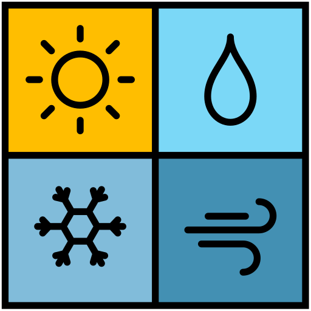
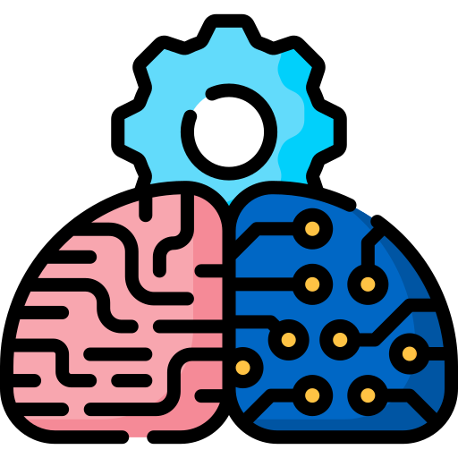

AI Fields
Artificial intelligence is a broad discipline made up of multiple fields. Each field provides a different way for machines to learn, understand, interpret information, and make decisions.
Machine Learning
Machine Learning (ML) focuses on enabling computers to learn patterns from data without being explicitly programmed. The system improves automatically through experience, which makes it ideal for tasks involving prediction, classification, and pattern detection.
ML powers everyday applications: recommendation systems on Netflix or YouTube, spam detection in email services, fraud detection in banks, and predictive analytics used in business planning.
Recommendation Systems
ML learns from user behavior to suggest movies, videos, or products tailored to personal interests.
Fraud Detection
Banks use ML to analyze transactions in real time and detect abnormal patterns to prevent fraud.

Prediction Models
ML models forecast trends, prices, and demand using large historical datasets.
Natural Language Processing (NLP)
NLP teaches computers to understand human language — both text and speech. It combines linguistics with machine learning to build systems that can analyze meaning, sentiment, and intent.
Modern NLP systems like GPT can write content, answer questions, summarize documents, and translate languages instantly.
Chatbots
NLP powers chatbots and virtual assistants capable of responding to human questions naturally.
Translation
AI translation systems can convert languages in real time across speech, text, and documents.
Computer Vision
Computer Vision (CV) allows machines to “see” and interpret visual information such as images or videos. It uses deep learning models, especially convolutional neural networks, to detect features in images.
CV is used in medical diagnosis to analyze X-rays, in self-driving cars to understand surroundings, and in security systems for face recognition.
Face Recognition
CV systems can detect faces in images, unlock devices, and identify individuals in security applications.
Medical Imaging
Hospitals use CV to detect diseases from X-rays and scans faster and more accurately.
Robotics
Robotics integrates AI with mechanical engineering to build systems that can act autonomously. Robots perceive their environment using sensors, then plan and perform tasks based on learned behavior.
Robots are used in manufacturing, logistics, surgery, and autonomous drones. They combine computer vision, machine learning, motion control, and decision algorithms.
Industrial Robots
Factories use robots to assemble, move, and package products while improving efficiency.
Autonomous Drones
Drones use AI to navigate safely, capture images, and perform delivery tasks without human control.
Planning & Search
Planning & Search is a core field of artificial intelligence that focuses on finding optimal decisions or solutions through exploration of possible states. These algorithms simulate different outcomes and choose the best possible path to reach a goal.
Planning & Search power many AI applications including game decision making, navigation, route optimization, as well as autonomous driving systems where the agent needs to decide the best action in real time.
Path Finding Algorithms
Algorithms such as A* and Dijkstra search through many possible routes to find the shortest and most efficient path.
Game Decision Making
Search is used in games like chess or Go to simulate future moves and select the optimal strategy to win.
Route Planning
Navigation systems use search to find the best route by comparing distance, traffic, and dynamic environmental changes.
AI Fields Summary
This table presents a visual summary of the AI fields described above. Each row highlights a field, a representative image, and a short description.
| Image | Field | Description |
|---|---|---|
 |
Machine Learning | ML enables machines to learn patterns from data to perform prediction and classification tasks. |
| Natural Language Processing | NLP allows computers to understand and generate human language in text and speech. | |
| Computer Vision | CV gives machines the ability to see and interpret visual content such as images and video. | |
| Robotics | Robotics integrates AI with mechanical engineering to build intelligent autonomous systems. | |
| Planning & Search | Planning & Search finds optimal solutions using algorithms such as A* and heuristic search. |